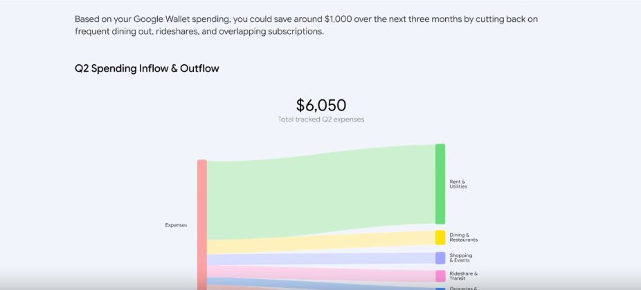
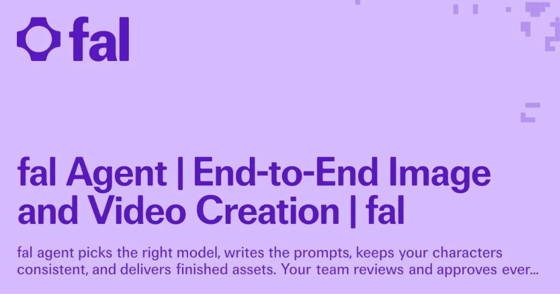

01Agent 与产品
Cloudflare · 开源AI智能体浏览器 Kitesurf
Cloudflare开源专为AI智能体打造的浏览器Kitesurf，代码已托管在GitHub，资源消耗低于Chromium，可供智能体更轻量地浏览和操作网页。
Cloudflare开源专为AI智能体打造的浏览器Kitesurf，代码已托管在GitHub，资源消耗低于Chromium，可供智能体更轻量地浏览和操作网页。

Gemini的个人智能功能正式支持Google Wallet，输入@Google Wallet即可询问财务状况和消费情况，通过Plaid授权关联账户后可生成消费图表并协助规划储蓄，该功能仅读取信息、无法转账。

Vercel Labs发布开源beta版UI SDK，提供50多种UI行为而非成品组件，供AI编码智能体组合出适配React、Vue、Svelte、Solid和Web Components的界面。

Perplexity Mac版为Max订阅用户开放AI智能体功能Teammates，此前仅支持iOS和网页端，智能体可围绕一项职责持续推进营销、错误分类、指标跟踪或市场研究，任务扩大时可引入多个智能体协作。

fal推出可在聊天中直接生成素材、编写代码并游玩游戏的fal Agent，从一句提示词到可玩的游戏全程在fal平台完成，同时上线Fable 5.2模型。

Runway以Apache 2.0许可开源Praxis-1的权重和代码，该模型基于视频训练，可根据相机图像、文本指令和机器人位置信息预测环境变化并计算动作。

清华大学自动化系发布ProtCell，汇集约3.8亿个细胞和98个公开数据集用于预训练与评估，并首次在摩尔线程MTT S5000智算卡上完成全流程预训练复现，核心指标与国际主流GPU平台差异仅约0.2%。

在微软任职逾14年的AI科学家、AI Frontiers实验室联合创始人John Langford已离职，原因是研究成果看不到落地路径、创新想法难以获得认真考虑。